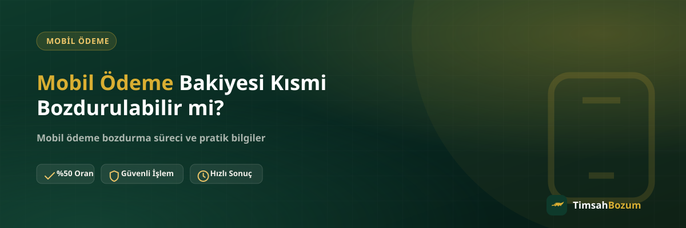

WhatsApp hattımıza yazan pek çok kişinin ilk merak ettiği şey aynı: "Bakiyemin tamamını mı bozdurmak zorundayım, yoksa dilediğim kadarını mı bozdurabilirim?" Bu soru özellikle hattında yüksek bir mobil ödeme bakiyesi biriken ama bunun bir kısmını başka bir amaç için hattında tutmak isteyen kullanıcılardan geliyor. Cevap net: mobil ödeme bakiyesi tamamen ya da bir kısmı bozdurulabilecek şekilde işlenebilir.
Mobil Ödeme Bakiyesinde Kısmi Bozdurma Nasıl İşler?
Mobil ödeme, hattına tanımlı dijital hizmet limitinden doğan bakiye tabanlı bir sistemdir. Bakiye tabanlı hizmetlerde bozdurulacak tutar sabit bir bütün değil, senin belirlediğin bir rakamdır. Yani 800 TL bakiyen varsa bunun tamamını değil, örneğin 300 TL'sini bozdurup kalan 500 TL'yi hattında bırakabilirsin. Bu esneklik, kod tabanlı hizmetlerden (Razer Gold, iTunes) mobil ödemeyi ayıran en temel fark.
Kısmi Bozdurma Tam Olarak Ne Demek?
Kısmi bozdurma, hattındaki toplam bakiyenin yalnızca senin belirlediğin bir bölümünün nakde çevrilmesi anlamına gelir. İşlem sırasında "bakiyemin tamamını" demek zorunda değilsin; "500 TL'lik kısmını bozdurmak istiyorum" demek yeterli. Kalan tutar hattında olduğu gibi durur, dilediğin zaman kullanmaya veya ileride ayrı bir işlemle bozdurmaya devam edebilirsin.
Neden Bakiyenin Tamamını Bozdurmak Zorunda Değilsin?
Bazı kullanıcılar mobil ödeme bakiyesinin bir kısmını ileride bir uygulama içi satın alma veya abonelik ödemesi için hattında tutmak ister, kalanını ise nakde ihtiyacı olduğu için bozdurmak ister. Kısmi bozdurma tam olarak bu ihtiyaca cevap veriyor: bakiyenin tamamını harcamak zorunda kalmadan, yalnızca ihtiyacın olan kısmı için işlem yapabiliyorsun. Bu, bakiyeni "ya hep ya hiç" mantığıyla değerlendirmek yerine kendi planına göre yönetmeni sağlıyor.
Kısmi Bozdurma Güvenilir mi?
Süreç, tam bozdurmadaki güvenlik adımlarının aynısını izler. Güncel bakiyeni gösteren bir ekran görüntüsünü WhatsApp hattımızdan paylaşır, bozdurmak istediğin tutarı ve oranı teyit eder, onay sonrası ödemeni WhatsApp üzerinden görüşülen yöntemle alırsın. Kısmi işlemde ek bir form, üyelik veya belge istenmez; tek fark bozdurulacak tutarın senin belirlediğin bir rakam olması.
Kısmi Bozdurma İşlemi Nasıl Yapılır?
İlk mesajında hangi tutarı bozdurmak istediğini net şekilde belirtmen süreci hızlandırır. Örneğin "Vodafone hattımda 600 TL mobil ödeme bakiyem var, bunun 250 TL'sini bozdurmak istiyorum" cümlesi ve bakiyeni gösteren ekran görüntüsü, oranın hemen teyit edilip işlemin ilerlemesi için yeterli. Tutarı belirtmeden sadece "bakiyemi bozdurun" yazman durumunda, hangi kısmı bozdurmak istediğin ayrıca sorulur ve bu da işlemi bir tur geciktirir.
Kısmi Bozdurma ile Kod Tabanlı Hizmetler Arasındaki Fark Nedir?
Razer Gold ve iTunes gibi hizmetlerde durum tamamen farklı işler: bu hizmetlerde tek kullanımlık bir kod veya PIN bozduruluyor, hesaba yüklenmiş bir bakiye söz konusu değil. Kod, bölünebilir bir yapıda olmadığı için tam değeri üzerinden tek seferde değerlendirilir; "kodun yarısını bozdurun" gibi bir talep karşılanamaz. Mobil ödeme, Pokus ve Paycell gibi bakiye tabanlı hizmetlerde ise durum tam tersi: tutar dilediğin şekilde bölünebilir.
Kalan Bakiyeni Nasıl Takip Edersin?
Kısmi bozdurma sonrası hattında kalan tutarı operatör uygulaman veya hat sorgulama menün üzerinden görebilirsin. Bu tutar, faturana yansıyan mobil ödeme limitinin bir parçası olmaya devam eder; yani kısmi bozdurma yaptığın için hattındaki mobil ödeme özelliği kapanmaz. İleride kalan bakiyenin tamamını veya bir kısmını daha bozdurmak istersen, aynı WhatsApp hattından güncel bir ekran görüntüsüyle yeni bir işlem başlatman yeterli.
Operatöre Göre Kısmi Bozdurmada Fark Var mı?
Vodafone, Türk Telekom ve Turkcell hatlarının hepsinde kısmi bozdurma aynı mantıkla işler; hangi operatörde olursan ol, bozdurulacak tutarı sen belirlersin. Tek fark operatöre göre değişen oranlarda ortaya çıkar: güncel oranlar değişebildiği için işlem öncesi mobil ödeme bozdurma sayfamızdan genel bilgiye göz atabilir, kesin oranı ise WhatsApp'tan teyit edebilirsin.
Hangi Durumlarda Kısmi Bozdurma Tercih Edilir?
Kısmi bozdurma genellikle iki farklı ihtiyaçtan doğar. Birincisi, hattında biriken bakiyenin bir kısmını acil bir nakit ihtiyacı için değerlendirmek isteyen ama kalan kısmı ileride bir uygulama içi satın alma veya abonelik ödemesi için saklamak isteyen kullanıcılar. İkincisi ise bakiyesinin ne kadarının bozdurulabilir olduğundan emin olmadığı için önce küçük bir tutarla süreci deneyimlemek isteyen, işlemin nasıl işlediğini görmek isteyen kullanıcılar. Her iki durumda da tutarı sen belirlediğin için işlem tamamen senin ihtiyacına göre şekillenir.
Kısmi Bozdurmada Dikkat Etmen Gereken Noktalar
Bozdurmak istediğin tutarı belirtirken bu tutarın hattındaki güncel bakiyeni aşmadığından emin ol; ekran görüntüsündeki rakamla talep ettiğin tutarın tutarlı olması işlemi ilk mesajdan itibaren hızlandırır. Ayrıca birden fazla kısmi işlemi art arda yapmak istiyorsan bunu da baştan belirtmen faydalı olur, böylece süreç her seferinde sıfırdan başlamaz. Oranın işlem anında güncel olup olmadığını her kısmi işlem öncesi ayrıca teyit etmek de önemli, çünkü oranlar zamanla değişebiliyor ve önceki işlemde teyit ettiğin oran bir sonraki işlem için geçerli olmayabilir.
Özetle Kısmi Bozdurma Elinde mi?
Kısacası mobil ödeme bakiyeni bozdururken tamamını harcamak zorunda değilsin; ihtiyacın kadarını bozdurup kalanını hattında bırakabilirsin. Bu esneklik bakiye tabanlı hizmetlere özgü, kod tabanlı hizmetlerde geçerli değil. Ne kadarını bozdurmak istediğine karar verdikten sonra güncel bakiyeni gösteren ekran görüntünle WhatsApp hattımızdan yazarak işlemini başlatabilirsin.
İlgili Yazılar
- Mobil Ödeme Limit Bozum Nedir? Limitin Tamamı Bozdurulur mu?
- Mobil Ödeme Bakiyesi Nedir, Nasıl Oluşur?
- Mobil Ödeme Bozdurmada Ödemeni Nasıl Alırsın? IBAN ile Tahsilat